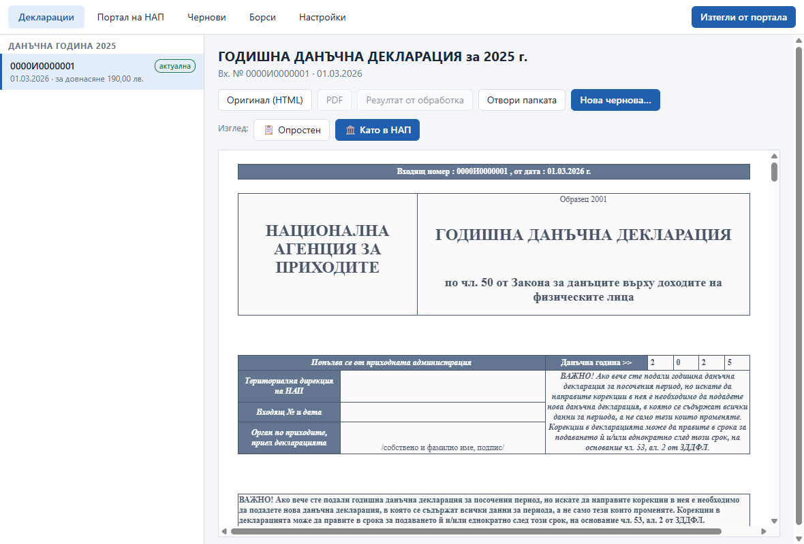
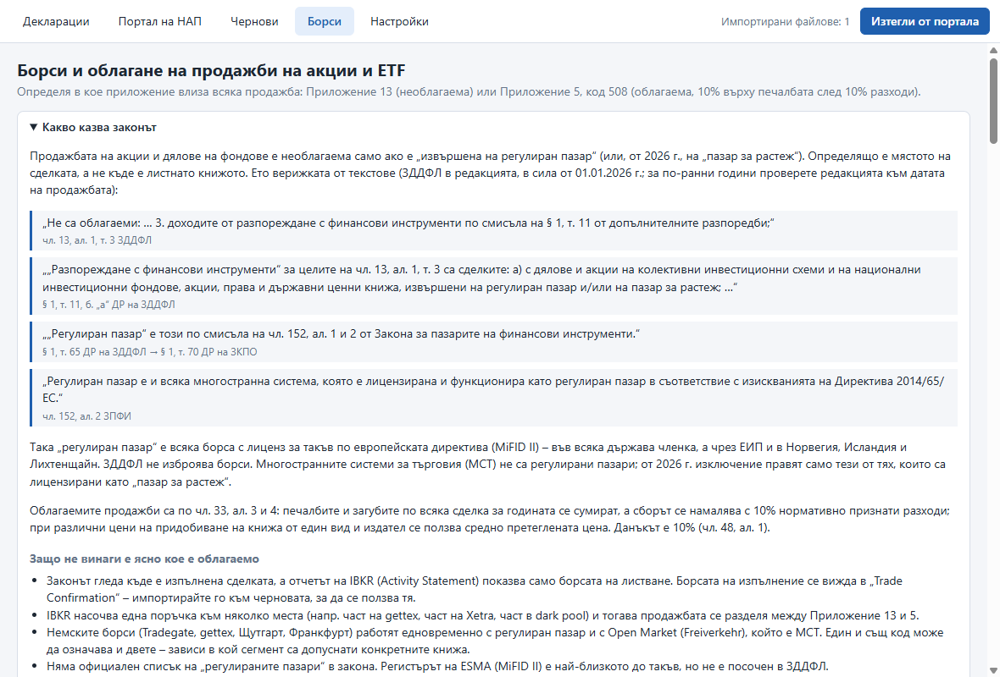
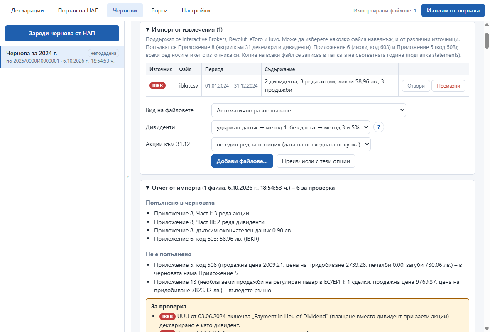
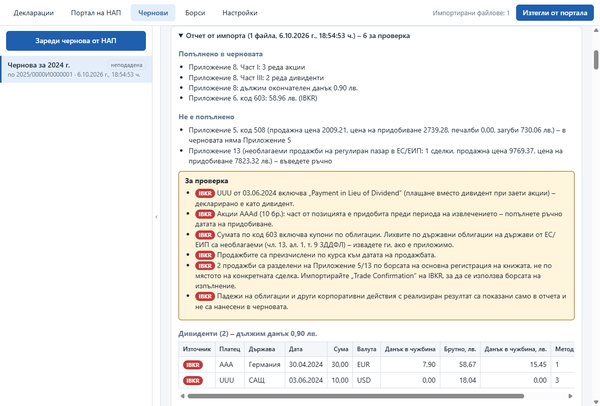
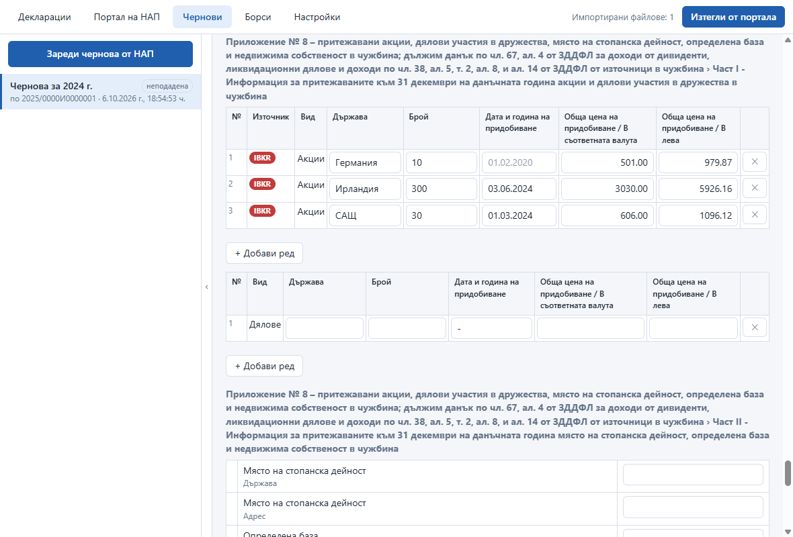
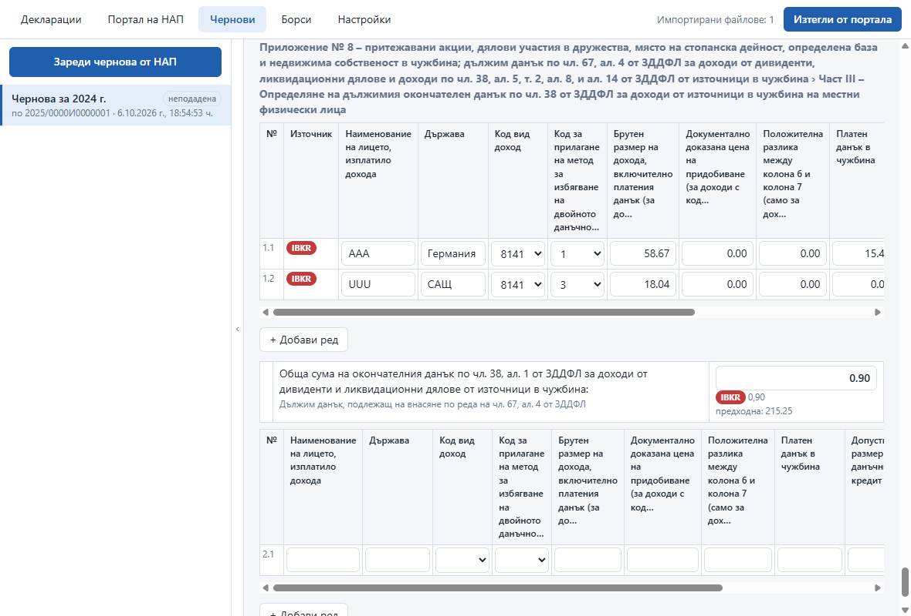
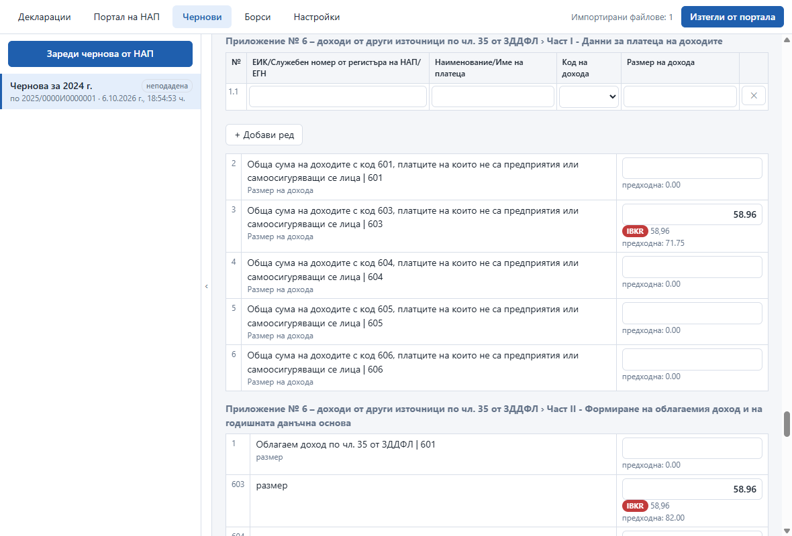

Три неща, добре
Приложението е за един формуляр – годишната данъчна декларация на физическо лице – и за работата около нея.
Декларация по чл. 50 от ЗДДФЛ
Основният формуляр и приложенията към него: 5, 6, 8, 13 и т.н. Разчита се независимо от годината, а оригиналният HTML винаги се пази.
Импорт от посредници
Извлечения от Interactive Brokers, Revolut, eToro и Iuvo попълват черновата: дивиденти, лихви, притежавани акции и продажби. Всеки ред показва източника си.
Управление на декларациите
Вход в портала на НАП, изтегляне на всичко подадено, зареждане на черновата от портала и локален архив по години.
Два изгледа
„Като в НАП“ показва декларацията и черновата така, както ги рисува порталът. „Опростен“ ги показва като таблици, удобни за редактиране.


Импорт от извлечения: Приложения 6 и 8
Добавяте файловете от посредниците и приложенията на черновата се попълват. Всеки ред и всяка сума показват от кой файл идват, а отчетът казва какво е попълнено, какво не и какво да проверите.





Данните на снимките са синтетични. Щракнете върху снимка, за да я видите в пълен размер.
Как работи
Истинският портал се показва във вграден браузър, а приложението чете през същата сесия.
Вход
ПИК, КЕП и е-автентикация работят както в обикновен браузър. Паролата се пази криптирана с Windows DPAPI и не стига до интерфейса.
Чернова от НАП
Бутонът „Зареди чернова от НАП“ взема черновата, която порталът пази, и я рисува със стиловете на самия портал – етикетите и кодовете съвпадат с живата форма.
Импорт и закон
Продажбите се разпределят между Приложение 5 и Приложение 13 според борсата на изпълнение. Сумите се превръщат с курса на ЕЦБ за деня.
Само за четене
Приложението няма път в кода, който подава декларация, а заявките, различни от GET, към портала се прекъсват по подразбиране.
Стартиране
От изходния код (Node 24 и Windows):
npm install
node node_modules/electron/install.js
npm startПреносима версия: npm run dist създава dist\NAP Helper <версия>.exe. Тестовете (npm test) работят върху синтетични данни.
Лиценз
MIT – всеки може да копира, променя и разпространява кода. Софтуерът се предоставя „както е“, без гаранция и без отговорност на автора за каквито и да е вреди от ползването му.
Лични данни
Всичко се пази на вашия компютър. В хранилището има само синтетични данни; личните документи и извлечения не се качват никъде.